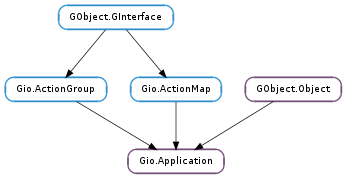

| Subclasses: | Gtk.Application |
|---|
| static | get_default() |
| static | id_is_valid(application_id) |
| static | new(application_id, flags) |
| activate() | |
| get_application_id() | |
| get_dbus_connection() | |
| get_dbus_object_path() | |
| get_flags() | |
| get_inactivity_timeout() | |
| get_is_registered() | |
| get_is_remote() | |
| hold() | |
| open(files, hint) | |
| quit() | |
| register(cancellable) | |
| release() | |
| run(argv) | |
| set_action_group(action_group) | |
| set_application_id(application_id) | |
| set_default() | |
| set_flags(flags) | |
| set_inactivity_timeout(inactivity_timeout) |
| Name | Type | Flags | Description |
|---|---|---|---|
| action-group | Gio.ActionGroup | w | The group of actions that the application exports |
| application-id | str | r/w | The unique identifier for the application |
| flags | Gio.ApplicationFlags | r/w | Flags specifying the behaviour of the application |
| inactivity-timeout | int | r/w | Time (ms) to stay alive after becoming idle |
| is-registered | bool | r | If Gio.Application.register () has been called |
| is-remote | bool | r | If this application instance is remote |
| Name | Parameters | Return | Description |
|---|---|---|---|
| activate | The ::activate signal is emitted on the primary instance when an activation occurs. See Gio.Application.activate (). | ||
| command-line | Gio.ApplicationCommandLine | int | The ::command-line signal is emitted on the primary instance when a commandline is not handled locally. See Gio.Application.run () and the Gio.ApplicationCommandLine documentation for more information. |
| open | int, int, str | The ::open signal is emitted on the primary instance when there are files to open. See Gio.Application.open () for more information. | |
| shutdown | The ::shutdown signal is emitted only on the registered primary instance immediately after the main loop terminates. | ||
| startup | The ::startup signal is emitted on the primary instance immediately after registration. See Gio.Application.register (). |
| Name | Type | Access |
|---|---|---|
| parent_instance | GObject.Object | r |
Bases: GObject.Object, Gio.ActionGroup, Gio.ActionMap
A Gio.Application is the foundation of an application. It wraps some low-level platform-specific services and is intended to act as the foundation for higher-level application classes such as #GtkApplication or #MxApplication. In general, you should not use this class outside of a higher level framework.
Gio.Application provides convenient life cycle management by maintaining a use count for the primary application instance. The use count can be changed using Gio.Application.hold () and Gio.Application.release (). If it drops to zero, the application exits. Higher-level classes such as #GtkApplication employ the use count to ensure that the application stays alive as long as it has any opened windows.
Another feature that Gio.Application (optionally) provides is process uniqueness. Applications can make use of this functionality by providing a unique application ID. If given, only one application with this ID can be running at a time per session. The session concept is platform-dependent, but corresponds roughly to a graphical desktop login. When your application is launched again, its arguments are passed through platform communication to the already running program. The already running instance of the program is called the primary instance; for non-unique applications this is the always the current instance. On Linux, the D-Bus session bus is used for communication.
The use of Gio.Application differs from some other commonly-used uniqueness libraries (such as libunique) in important ways. The application is not expected to manually register itself and check if it is the primary instance. Instead, the main() function of a Gio.Application should do very little more than instantiating the application instance, possibly connecting signal handlers, then calling Gio.Application.run (). All checks for uniqueness are done internally. If the application is the primary instance then the startup signal is emitted and the mainloop runs. If the application is not the primary instance then a signal is sent to the primary instance and Gio.Application.run () promptly returns. See the code examples below.
If used, the expected form of an application identifier is very close to that of of a DBus bus name. Examples include: “com.example.MyApp”, “org.example.internal-apps.Calculator”. For details on valid application identifiers, see Gio.Application.id_is_valid ().
On Linux, the application identifier is claimed as a well-known bus name on the user’s session bus. This means that the uniqueness of your application is scoped to the current session. It also means that your application may provide additional services (through registration of other object paths) at that bus name. The registration of these object paths should be done with the shared GDBus session bus. Note that due to the internal architecture of GDBus, method calls can be dispatched at any time (even if a main loop is not running). For this reason, you must ensure that any object paths that you wish to register are registered before Gio.Application attempts to acquire the bus name of your application (which happens in Gio.Application.register ()). Unfortunately, this means that you cannot use Gio.Application.get_is_remote () to decide if you want to register object paths.
Gio.Application also implements the Gio.ActionGroup and Gio.ActionMap interfaces and lets you easily export actions by adding them with Gio.ActionMap.add_action (). When invoking an action by calling Gio.ActionGroup.activate_action () on the application, it is always invoked in the primary instance. The actions are also exported on the session bus, and GIO provides the Gio.DBusActionGroup wrapper to conveniently access them remotely. GIO provides a Gio.DBusMenuModel wrapper for remote access to exported Gio.MenuModels.
There is a number of different entry points into a Gio.Application:
The Gio.Application ::startup signal lets you handle the application initialization for all of these in a single place.
Regardless of which of these entry points is used to start the application, Gio.Application passes some platform data from the launching instance to the primary instance, in the form of a GLib.Variant dictionary mapping strings to variants. To use platform data, override the before_emit or after_emit virtual functions in your Gio.Application subclass. When dealing with Gio.ApplicationCommandLine objects, the platform data is directly available via Gio.ApplicationCommandLine.get_cwd (), Gio.ApplicationCommandLine.get_environ () and Gio.ApplicationCommandLine.get_platform_data ().
As the name indicates, the platform data may vary depending on the operating system, but it always includes the current directory (key “cwd”), and optionally the environment (ie the set of environment variables and their values) of the calling process (key “environ”). The environment is only added to the platform data if the Gio.ApplicationFlags.SEND_ENVIRONMENT flag is set. Gio.Application subclasses can add their own platform data by overriding the add_platform_data virtual function. For instance, #GtkApplication adds startup notification data in this way.
To parse commandline arguments you may handle the Gio.Application ::command-line signal or override the local_command_line() vfunc, to parse them in either the primary instance or the local instance, respectively.
Opening files with a Gio.Application FIXME: MISSING XINCLUDE CONTENT
A Gio.Application with actions FIXME: MISSING XINCLUDE CONTENT
A Gio.Application with menus FIXME: MISSING XINCLUDE CONTENT
Using extra D-Bus hooks with a Gio.Application FIXME: MISSING XINCLUDE CONTENT
| Returns: | the default application for this process, or None |
|---|---|
| Return type: | Gio.Application |
Returns the default Gio.Application instance for this process.
Normally there is only one Gio.Application per process and it becomes the default when it is created. You can exercise more control over this by using Gio.Application.set_default ().
If there is no default application then None is returned.
| Parameters: | application_id (str) – a potential application identifier |
|---|---|
| Returns: | True if application_id is valid |
| Return type: | bool |
Checks if application_id is a valid application identifier.
A valid ID is required for calls to Gio.Application.new () and Gio.Application.set_application_id ().
For convenience, the restrictions on application identifiers are reproduced here:
| Parameters: |
|
|---|---|
| Returns: | a new Gio.Application instance |
| Return type: |
Creates a new Gio.Application instance.
If non-None, the application id must be valid. See Gio.Application.id_is_valid ().
If no application ID is given then some features of Gio.Application (most notably application uniqueness) will be disabled.
The ::activate signal is emitted on the primary instance when an activation occurs. See Gio.Application.activate ().
| Returns: | the identifier for application, owned by application |
|---|---|
| Return type: | str |
Gets the unique identifier for application.
| Returns: | a Gio.DBusConnection, or None |
|---|---|
| Return type: | Gio.DBusConnection |
Gets the Gio.DBusConnection being used by the application, or None.
If Gio.Application is using its D-Bus backend then this function will return the Gio.DBusConnection being used for uniqueness and communication with the desktop environment and other instances of the application.
If Gio.Application is not using D-Bus then this function will return None. This includes the situation where the D-Bus backend would normally be in use but we were unable to connect to the bus.
This function must not be called before the application has been registered. See Gio.Application.get_is_registered ().
| Returns: | the object path, or None |
|---|---|
| Return type: | str |
Gets the D-Bus object path being used by the application, or None.
If Gio.Application is using its D-Bus backend then this function will return the D-Bus object path that Gio.Application is using. If the application is the primary instance then there is an object published at this path. If the application is not the primary instance then the result of this function is undefined.
If Gio.Application is not using D-Bus then this function will return None. This includes the situation where the D-Bus backend would normally be in use but we were unable to connect to the bus.
This function must not be called before the application has been registered. See Gio.Application.get_is_registered ().
| Returns: | the flags for application |
|---|---|
| Return type: | Gio.ApplicationFlags |
Gets the flags for application.
See Gio.ApplicationFlags.
| Returns: | the timeout, in milliseconds |
|---|---|
| Return type: | int |
Gets the current inactivity timeout for the application.
This is the amount of time (in milliseconds) after the last call to Gio.Application.release () before the application stops running.
| Returns: | True if application is registered |
|---|---|
| Return type: | bool |
Checks if application is registered.
An application is registered if Gio.Application.register () has been successfully called.
| Returns: | True if application is remote |
|---|---|
| Return type: | bool |
Checks if application is remote.
If application is remote then it means that another instance of application already exists (the ‘primary’ instance). Calls to perform actions on application will result in the actions being performed by the primary instance.
The value of this property cannot be accessed before Gio.Application.register () has been called. See Gio.Application.get_is_registered ().
Increases the use count of application.
Use this function to indicate that the application has a reason to continue to run. For example, Gio.Application.hold () is called by GTK+ when a toplevel window is on the screen.
To cancel the hold, call Gio.Application.release ().
| Parameters: |
|---|
The ::open signal is emitted on the primary instance when there are files to open. See Gio.Application.open () for more information.
Immediately quits the application.
Upon return to the mainloop, Gio.Application.run () will return, calling only the ‘shutdown’ function before doing so.
The hold count is ignored.
The result of calling Gio.Application.run () again after it returns is unspecified.
| Parameters: | cancellable (Gio.Cancellable or None) – a Gio.Cancellable, or None |
|---|---|
| Raises: | GLib.GError |
| Returns: | True if registration succeeded |
| Return type: | bool |
Attempts registration of the application.
This is the point at which the application discovers if it is the primary instance or merely acting as a remote for an already-existing primary instance. This is implemented by attempting to acquire the application identifier as a unique bus name on the session bus using GDBus.
If there is no application ID or if Gio.ApplicationFlags.NON_UNIQUE was given, then this process will always become the primary instance.
Due to the internal architecture of GDBus, method calls can be dispatched at any time (even if a main loop is not running). For this reason, you must ensure that any object paths that you wish to register are registered before calling this function.
If the application has already been registered then True is returned with no work performed.
The Gio.Application ::startup signal is emitted if registration succeeds and application is the primary instance (including the non-unique case).
In the event of an error (such as cancellable being cancelled, or a failure to connect to the session bus), False is returned and error is set appropriately.
Note: the return value of this function is not an indicator that this instance is or is not the primary instance of the application. See Gio.Application.get_is_remote () for that.
Decrease the use count of application.
When the use count reaches zero, the application will stop running.
Never call this function except to cancel the effect of a previous call to Gio.Application.hold ().
| Parameters: | argv ([str] or None) – the argv from main(), or None |
|---|---|
| Returns: | the exit status |
| Return type: | int |
Runs the application.
This function is intended to be run from main() and its return value is intended to be returned by main(). Although you are expected to pass the argc, argv parameters from main() to this function, it is possible to pass None if argv is not available or commandline handling is not required.
First, the local_command_line() virtual function is invoked. This function always runs on the local instance. It gets passed a pointer to a None-terminated copy of argv and is expected to remove the arguments that it handled (shifting up remaining arguments). See for an example of parsing argv manually. Alternatively, you may use the GLib.OptionContext API, after setting argc = g_strv_length (argv);.
The last argument to local_command_line() is a pointer to the status variable which can used to set the exit status that is returned from Gio.Application.run ().
If local_command_line() returns True, the command line is expected to be completely handled, including possibly registering as the primary instance, calling Gio.Application.activate () or Gio.Application.open (), etc.
If local_command_line() returns False then the application is registered and the Gio.Application ::command-line signal is emitted in the primary instance (which may or may not be this instance). The signal handler gets passed a Gio.ApplicationCommandLine object that (among other things) contains the remaining commandline arguments that have not been handled by local_command_line().
If the application has the Gio.ApplicationFlags.HANDLES_COMMAND_LINE flag set then the default implementation of local_command_line() always returns False immediately, resulting in the commandline always being handled in the primary instance.
Otherwise, the default implementation of local_command_line() tries to do a couple of things that are probably reasonable for most applications. First, Gio.Application.register () is called to attempt to register the application. If that works, then the command line arguments are inspected. If no commandline arguments are given, then Gio.Application.activate () is called. If commandline arguments are given and the Gio.ApplicationFlags.HANDLES_OPEN flag is set then they are assumed to be filenames and Gio.Application.open () is called.
If you need to handle commandline arguments that are not filenames, and you don’t mind commandline handling to happen in the primary instance, you should set Gio.ApplicationFlags.HANDLES_COMMAND_LINE and process the commandline arguments in your Gio.Application ::command-line signal handler, either manually or using the GLib.OptionContext API.
If you are interested in doing more complicated local handling of the commandline then you should implement your own Gio.Application subclass and override local_command_line(). In this case, you most likely want to return True from your local_command_line() implementation to suppress the default handling. See for an example.
If, after the above is done, the use count of the application is zero then the exit status is returned immediately. If the use count is non-zero then the default main context is iterated until the use count falls to zero, at which point 0 is returned.
If the Gio.ApplicationFlags.IS_SERVICE flag is set, then the service will run for as much as 10 seconds with a use count of zero while waiting for the message that caused the activation to arrive. After that, if the use count falls to zero the application will exit immediately, except in the case that Gio.Application.set_inactivity_timeout () is in use.
| Parameters: | action_group (Gio.ActionGroup or None) – a Gio.ActionGroup, or None |
|---|
This used to be how actions were associated with a Gio.Application. Now there is Gio.ActionMap for that.
| Parameters: | application_id (str or None) – the identifier for application |
|---|
Sets the unique identifier for application.
The application id can only be modified if application has not yet been registered.
If non-None, the application id must be valid. See Gio.Application.id_is_valid ().
Sets or unsets the default application for the process, as returned by Gio.Application.get_default ().
This function does not take its own reference on application. If application is destroyed then the default application will revert back to None.
| Parameters: | flags (Gio.ApplicationFlags) – the flags for application |
|---|
Sets the flags for application.
The flags can only be modified if application has not yet been registered.
See Gio.ApplicationFlags.
| Parameters: | inactivity_timeout (int) – the timeout, in milliseconds |
|---|
Sets the current inactivity timeout for the application.
This is the amount of time (in milliseconds) after the last call to Gio.Application.release () before the application stops running.
This call has no side effects of its own. The value set here is only used for next time Gio.Application.release () drops the use count to zero. Any timeouts currently in progress are not impacted.